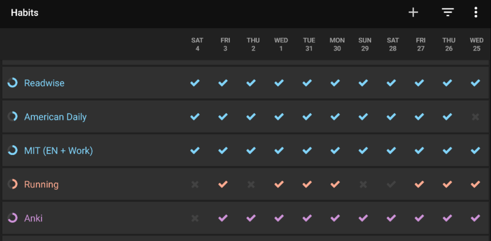

The recent shelter-in-place / stay-at-home order has dramatically changed our routines. I don’t need to commute to office so I do not listen to podcasts. I don’t have morning coffee since I have no access to the mirco-kitchen in the office. I walk less as I stay at home all day. I started doing daily push up because it is less awkward to do at home, compared to the office. I spend more time with Casper because he is just nearby. Even on my Strava feed, some friends seem to have disappeared while some friends start showing up more days.
Technically speaking, this changed tons of “habit cues”, like the activity, place, people, and even our mood. Hence, it will definitely change our habits as well.
You never want a serious crisis to go to waste. And what I mean by that is an opportunity to do things that you think you could not do before. – Rahm Emanuel
In terms of personal development, it is a waste if we don’t deliberately build good habits from this big change. Don’t expect good habits to come automatically. They usually don’t! Instead, bad habits are more likely to form because their consequences are delayed while the rewards are immediate. Like eating junk food, surfing social media, just to name a few.
If good habits do not come automatically, how to build them effectively?
The Keystone Habits
According to Charles Duhigg, author of The Power of Habit,
Keystone habits help other habits to flourish by creating new structures, and establish cultures where change becomes contagious.
In other words, keystone habits are habits that build other habits. Some common keystone habits are exercising, meditation, good sleep, journaling etc. (These examples might sound boring and not as cool as the “keystone habits” :-p )
Good keystone habits are worth investing in and their domino effects will make huge impacts in the long term. Time will magnify the results. Although we know keystone habits are great, the problem is, like all habits, they could break. According to US News, 80% of new year’s resolutions fail by the second week of Feburary.
How to make good (keystone) habits stick? Well, let’s build the keystone habit of keystone habits.
Habit Tracker (The Keystone Habit of Keystone Habits)
In my humble opinion, habit tracker is the keystone habit of keystone habits because it holds the explicit cues to other habits / keystone habits. It is beautiful because it allows me to keep only one, instead of all immature habits in mind. It makes habit building much easier!
My first habit tracker was my Evernote Productivity System. It simply held all my TODOs and daily habits.
However, TODOs and habits are fundamentally different. For example, habits repeat and repeat very often but TODOs are not. Habits are more okay to break if the reclaiming is fast. The value of habits are measured over time. That said, mixing habits and TODOs in the same list obscures the important TODOs.
Hence, I split them into a standalone habit tracker app. My second (current) habit tracker becomes a standalone app.

That is how I build habits now.
The Two Books
Habit is an interesting topic and it has gotten traction in recent years, thanks to two best seller books.
I learnt the habit concepts from these two books. “The Power of Habit” tells more stories behind habits while “Atomic Habit” gives more practical advices. Both are good books but if you want to pick only one, then “Atomic Habit” is the way to go!
Finally, thanks for reading til now to this very last sentence :-)